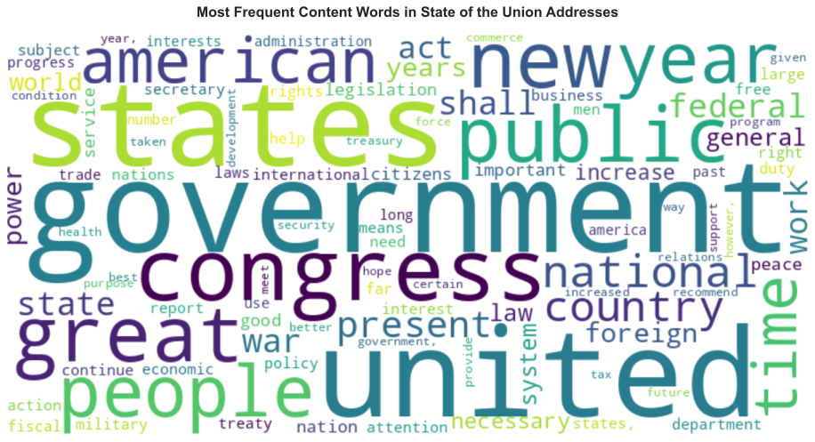

How to transform unstructured text into structured data
What tokenization is and why it matters
How word frequencies reveal patterns in text
Zipf’s Law and its implications for text analysis
What stop words are and when to remove them
The basics of text preprocessing
What stylometry is and how function words reveal authorship
How to use Python and pandas for basic text analysis
2 Introduction: Why Text as Data?
Text is everywhere: social media posts, news articles, scientific papers, government documents, customer reviews. But text in its raw form is unstructured - it’s just sequences of characters. To analyze text computationally, we need to transform it into structured data that computers can process mathematically.
Think of it this way: if you wanted to compare two novels, you could read both and form an impression. But what if you had 1,000 novels? Or 100,000 tweets? This is where computational text analysis becomes essential.
2.1 Our Dataset: State of the Union Addresses
Today we’ll work with a collection of State of the Union addresses - speeches given by US presidents from the 18th century to 2018. These speeches are:
Historical: Spanning over 200 years
Political: Reflecting different eras and priorities
Comparable: Same genre, same occasion, different authors
This makes them perfect for learning text analysis techniques.
First, let’s load the Python packages we’ll need:
# you will need to run it once after installing spaCy!python-m spacy download en_core_web_sm
# Data manipulationimport pandas as pd# Text processingimport spacyfrom collections import Counter# Visualizationimport matplotlib.pyplot as pltimport seaborn as sns# For word cloudsfrom wordcloud import WordCloud# Set visualization stylesns.set_style("whitegrid")plt.rcParams['figure.figsize'] = (12, 6)print("✓ Packages loaded successfully")
✓ Packages loaded successfully
Noteüìå About these packages
pandas: Works with tabular data (like spreadsheets)
spaCy: Processes natural language text
matplotlib/seaborn: Create visualizations
wordcloud: Generate word cloud visualizations
4 Loading and Exploring the Data
Let’s load our dataset:
# Load the dataspeeches = pd.read_csv("data/transcripts.csv")# Display first few rowsprint("Dataset shape:", speeches.shape)print("\nFirst few rows:")speeches.head()
Dataset shape: (244, 5)
First few rows:
date
president
title
url
transcript
0
2018-01-30
Donald J. Trump
Address Before a Joint Session of the Congress...
https://www.cnn.com/2018/01/30/politics/2018-s...
\nMr. Speaker, Mr. Vice President, Members of ...
1
2017-02-28
Donald J. Trump
Address Before a Joint Session of the Congress
http://www.presidency.ucsb.edu/ws/index.php?pi...
Thank you very much. Mr. Speaker, Mr. Vice Pre...
2
2016-01-12
Barack Obama
Address Before a Joint Session of the Congress...
http://www.presidency.ucsb.edu/ws/index.php?pi...
Thank you. Mr. Speaker, Mr. Vice President, Me...
3
2015-01-20
Barack Obama
Address Before a Joint Session of the Congress...
http://www.presidency.ucsb.edu/ws/index.php?pi...
The President. Mr. Speaker, Mr. Vice President...
4
2014-01-28
Barack Obama
Address Before a Joint Session of the Congress...
http://www.presidency.ucsb.edu/ws/index.php?pi...
The President. Mr. Speaker, Mr. Vice President...
4.1 Understanding the Data Structure
Our data is in tabular format - like a spreadsheet with rows and columns:
# Check column names and typesprint("Columns:")print(speeches.dtypes)# Basic statisticsprint("\nNumber of speeches:", len(speeches))print("Number of presidents:", speeches['president'].nunique())print("\nDate range:")print(" Earliest:", speeches['date'].min())print(" Latest:", speeches['date'].max())
Columns:
date object
president object
title object
url object
transcript object
dtype: object
Number of speeches: 244
Number of presidents: 42
Date range:
Earliest: 1790-01-08
Latest: 2018-01-30
Each row represents one speech. The columns contain:
date: When the speech was given
president: Who gave it
title: The speech’s official title
url: Where the transcript came from
transcript: The actual text of the speech
Let’s look at a short excerpt:
# Display a snippet of one speechsample_text = speeches.loc[0, 'transcript'][:500] # First 500 charactersprint("Sample from first speech:")print(sample_text)print("...")
Sample from first speech:
Mr. Speaker, Mr. Vice President, Members of Congress, the First Lady of the United States, and my fellow Americans:
Less than 1 year has passed since I first stood at this podium, in this majestic chamber, to speak on behalf of the American People -- and to address their concerns, their hopes, and their dreams. That night, our new Administration had already taken swift action. A new tide of optimism was already sweeping across our land.
Each day since, we have gone forward with a clear vision
...
Tipüí° Why This Structure?
Text data commonly comes with metadata (data about data):
Author, date, source, title, etc.
This metadata helps us compare and analyze texts
We keep text and metadata together in a table
5 From Text to Tokens - The Bag of Words Model
5.1 The Challenge: Text is Unstructured
Right now, our transcript column contains long strings of text. How do we measure or compare them? We can’t easily do math on text!
5.2 The Solution: Tokenization
Tokenization is the process of splitting text into smaller units called tokens. Usually, tokens are words, but they could also be:
Characters (letters)
Sentences
N-grams (sequences of N words)
Let’s see this in action:
# Simple example: split text into wordsexample ="Python is great for text analysis"words = example.split()print("Original text:", example)print("Tokens (words):", words)print("Number of tokens:", len(words))
Original text: Python is great for text analysis
Tokens (words): ['Python', 'is', 'great', 'for', 'text', 'analysis']
Number of tokens: 6
5.3 Tokenizing Our Speeches
Now let’s tokenize one full speech:
# Get one speechspeech_text = speeches.loc[0, 'transcript']# Simple tokenization (just splitting on spaces)simple_tokens = speech_text.split()print(f"Speech length: {len(speech_text)} characters")print(f"Number of tokens: {len(simple_tokens)}")print(f"\nFirst 20 tokens:")print(simple_tokens[:20])
Once we have tokens, we can treat text as a “bag of words” - we:
Ignore word order (“cat dog” = “dog cat”)
Count word frequencies
Represent text as numbers
This might seem like we’re throwing away information (word order matters!), but this simple model is surprisingly powerful for many tasks.
Let’s create a bag of words for one speech:
# Count word frequenciesword_counts = Counter(simple_tokens)# Show most common wordsprint("Top 15 most frequent words:")for word, count in word_counts.most_common(15):print(f" {word}: {count}")
Top 15 most frequent words:
the: 215
and: 184
to: 175
of: 121
our: 95
we: 88
a: 79
in: 72
is: 61
are: 48
that: 45
--: 44
have: 40
for: 34
will: 34
5.5 Two Data Formats: Long vs Wide
We can represent tokenized text in two ways:
Long format: One row per word occurrence
president word
Trump the
Trump economy
Trump is
Trump strong
Wide format: One row per document, one column per unique word
president the economy is strong
Trump 150 12 89 5
For now, we’ll work with long format because it’s easier to understand and manipulate.
6 Tokenizing All Speeches
Let’s tokenize all speeches and create a long-format dataset:
# Initialize empty list to store resultsall_tokens = []# Process each speechfor idx, row in speeches.iterrows(): president = row['president'] text = row['transcript']# Simple tokenization tokens = text.lower().split() # Convert to lowercase# Add each token to our listfor token in tokens: all_tokens.append({'president': president,'word': token })# Convert to DataFrametokens_df = pd.DataFrame(all_tokens)print(f"Total number of tokens: {len(tokens_df):,}")print(f"\nFirst few rows:")tokens_df.head(10)
Total number of tokens: 3,947,946
First few rows:
president
word
0
Donald J. Trump
mr.
1
Donald J. Trump
speaker,
2
Donald J. Trump
mr.
3
Donald J. Trump
vice
4
Donald J. Trump
president,
5
Donald J. Trump
members
6
Donald J. Trump
of
7
Donald J. Trump
congress,
8
Donald J. Trump
the
9
Donald J. Trump
first
6.1 How many unique words?
unique_words = tokens_df['word'].nunique()print(f"Number of unique words: {unique_words:,}")
Number of unique words: 68,356
That’s a lot of unique words! But are they all useful?
7 Word Frequencies
Now let’s count how often each word appears:
# Count word frequenciesword_freq = tokens_df['word'].value_counts().reset_index()word_freq.columns = ['word', 'count']print("Top 20 most frequent words:")print(word_freq.head(20))
Top 20 most frequent words:
word count
0 the 326862
1 of 212531
2 to 135329
3 and 133944
4 in 85772
5 a 61992
6 that 47130
7 for 43079
8 be 40521
9 our 38759
10 is 36752
11 by 32429
12 it 29271
13 we 27276
14 have 26784
15 this 26594
16 as 26510
17 with 26400
18 which 26237
19 will 21913
7.1 Visualizing Frequency
# Plot top 15 wordstop_15 = word_freq.head(15)plt.figure(figsize=(10, 6))sns.barplot(data=top_15, y='word', x='count', palette='viridis')plt.title('Top 15 Most Frequent Words in State of the Union Addresses', fontsize=14, fontweight='bold')plt.xlabel('Frequency (count)', fontsize=12)plt.ylabel('Word', fontsize=12)plt.tight_layout()plt.show()
/tmp/ipykernel_1863094/2171022789.py:5: FutureWarning:
Passing `palette` without assigning `hue` is deprecated and will be removed in v0.14.0. Assign the `y` variable to `hue` and set `legend=False` for the same effect.
sns.barplot(data=top_15, y='word', x='count', palette='viridis')
These are grammatical words that appear in almost any English text. They don’t tell us much about the content of the speeches!
This observation leads us to an important concept…
8 Zipf’s Law - A Fundamental Pattern
8.1 What is Zipf’s Law?
If you count word frequencies in any large collection of text and rank words by frequency, you’ll observe something remarkable:
The most common word appears roughly twice as often as the second most common word, three times as often as the third most common, and so on.
This is called Zipf’s Law (named after linguist George Kingsley Zipf).
8.2 Why Does This Matter?
Zipf’s Law tells us that:
A few words are very common (“the”, “of”, “and”)
Most words are very rare (appear only once or twice)
This pattern is universal - it appears in all languages and genres
This has practical implications:
Most words provide little statistical power (they’re too rare)
A small vocabulary covers most of any text
We need strategies to deal with this imbalance
8.3 Visualizing Zipf’s Law
Let’s see if our data follows Zipf’s Law:
# Add rank to our frequency tableword_freq['rank'] =range(1, len(word_freq) +1)# Create log-log plotplt.figure(figsize=(10, 6))plt.loglog(word_freq['rank'], word_freq['count'], 'b.')plt.xlabel('Rank (log scale)', fontsize=12)plt.ylabel('Frequency (log scale)', fontsize=12)plt.title("Zipf's Law in State of the Union Addresses", fontsize=14, fontweight='bold')plt.grid(True, alpha=0.3)plt.tight_layout()plt.show()
The nearly straight line on a log-log plot confirms Zipf’s Law!
8.4 The Long Tail
Let’s look at how many words appear only once or twice:
# Count words by frequencyfreq_distribution = word_freq['count'].value_counts().sort_index()print("Distribution of word frequencies:")print(f" Words appearing once: {freq_distribution.get(1, 0):,}")print(f" Words appearing twice: {freq_distribution.get(2, 0):,}")print(f" Words appearing 3-5 times: {freq_distribution.loc[3:5].sum():,}")print(f" Words appearing 6-10 times: {freq_distribution.loc[6:10].sum():,}")print(f" Words appearing > 100 times: {(word_freq['count'] >100).sum():,}")
Distribution of word frequencies:
Words appearing once: 9,835
Words appearing twice: 27,310
Words appearing 3-5 times: 8,157
Words appearing 6-10 times: 7,957
Words appearing > 100 times: 3,484
This is the “long tail” - many rare words, few common words.
ImportantüéØ Key Insight
Zipf’s Law means that word frequencies are highly skewed. This affects how we:
Build statistical models
Select features for machine learning
Preprocess text
Interpret results
9 Stop Words and Preprocessing
9.1 What are Stop Words?
Stop words are extremely common words that appear frequently in almost any text:
Articles: the, a, an
Prepositions: in, on, at, to, from
Pronouns: I, you, he, she, it
Conjunctions: and, but, or
Auxiliary verbs: is, are, was, were
9.2 Why Remove Stop Words?
There are two main perspectives:
Reasons to remove stop words:
Content analysis: They don’t tell us about the topic
Computational efficiency: Fewer words = faster processing
Signal-to-noise: They can overwhelm more informative words
Reasons to keep stop words:
Stylometry: They reveal personal writing style
Syntax: Needed for parsing sentence structure
Meaning: Sometimes they matter (“not good” ≠ “good”)
9.3 Stop Words in Our Data
Let’s see what Python’s spaCy library considers stop words:
# Load English language model (small version)try: nlp = spacy.load("en_core_web_sm")except:# If not installed, show installation instructionsprint("Please install spaCy model:")print("!python -m spacy download en_core_web_sm")# For now, use a simple stopword listfrom spacy.lang.en.stop_words import STOP_WORDS stopwords_set = STOP_WORDSelse: stopwords_set = nlp.Defaults.stop_wordsprint(f"Number of stop words: {len(stopwords_set)}")print(f"\nFirst 30 stop words (alphabetically):")print(sorted(list(stopwords_set))[:30])
Number of stop words: 326
First 30 stop words (alphabetically):
["'d", "'ll", "'m", "'re", "'s", "'ve", 'a', 'about', 'above', 'across', 'after', 'afterwards', 'again', 'against', 'all', 'almost', 'alone', 'along', 'already', 'also', 'although', 'always', 'am', 'among', 'amongst', 'amount', 'an', 'and', 'another', 'any']
9.4 Comparing with Our Most Frequent Words
# Check which top words are stop wordstop_30 = word_freq.head(30).copy()top_30['is_stopword'] = top_30['word'].isin(stopwords_set)print("Top 30 words with stop word labels:")print(top_30[['word', 'count', 'is_stopword']])
Top 30 words with stop word labels:
word count is_stopword
0 the 326862 True
1 of 212531 True
2 to 135329 True
3 and 133944 True
4 in 85772 True
5 a 61992 True
6 that 47130 True
7 for 43079 True
8 be 40521 True
9 our 38759 True
10 is 36752 True
11 by 32429 True
12 it 29271 True
13 we 27276 True
14 have 26784 True
15 this 26594 True
16 as 26510 True
17 with 26400 True
18 which 26237 True
19 will 21913 True
20 on 20689 True
21 i 20687 True
22 has 19896 True
23 are 19619 True
24 been 19135 True
25 not 18597 True
26 their 16784 True
27 from 16055 True
28 at 14991 True
29 all 13608 True
Notice how most of the top frequent words are stop words!
9.5 Removing Stop Words
# Filter out stop wordscontent_words = word_freq[~word_freq['word'].isin(stopwords_set)].copy()print(f"Words before removing stop words: {len(word_freq):,}")print(f"Words after removing stop words: {len(content_words):,}")print(f"\nTop 30 content words:")print(content_words.head(30))
Words before removing stop words: 68,356
Words after removing stop words: 68,058
Top 30 content words:
word count rank
35 government 11209 36
38 united 10158 39
42 states 9524 43
44 congress 8597 45
52 new 7120 53
56 great 6714 57
59 public 6520 60
62 people 6229 63
66 year 5918 67
69 american 5575 70
72 time 5162 73
76 national 4888 77
81 country 4367 82
82 present 4331 83
88 federal 4093 89
89 state 4073 90
90 shall 4006 91
91 war 3987 92
99 work 3501 100
100 act 3485 101
102 foreign 3369 103
103 years 3319 104
105 power 3206 106
106 general 3191 107
107 law 3171 108
108 world 3168 109
112 system 2931 113
116 necessary 2878 117
117 increase 2818 118
118 legislation 2790 119
Now we see more content-bearing words: government, states, congress, country, people, etc.
9.6 Visualizing Content Words
# Create word cloud from content wordswordcloud_dict =dict(zip(content_words['word'].head(100), content_words['count'].head(100)))wordcloud = WordCloud(width=800, height=400, background_color='white', colormap='viridis').generate_from_frequencies(wordcloud_dict)plt.figure(figsize=(14, 7))plt.imshow(wordcloud, interpolation='bilinear')plt.axis('off')plt.title('Most Frequent Content Words in State of the Union Addresses', fontsize=16, fontweight='bold', pad=20)plt.tight_layout()plt.show()

Tipüí° Preprocessing is a Choice
Whether to remove stop words depends on your research question:
Topic modeling: Usually remove
Sentiment analysis: Keep (negations matter!)
Stylometry: Keep (they reveal style!)
Document classification: Test both
10 Introduction to Stylometry
10.1 What is Stylometry?
Stylometry is the statistical analysis of writing style. It’s used to:
Attribute authorship: Who wrote this anonymous text?
Detect plagiarism: Did someone copy another’s style?
Study literary history: How did an author’s style evolve?
Forensics: Analyze threatening letters or disputed documents
10.2 The Surprising Power of Function Words
You might think content words (nouns, verbs) reveal writing style. But actually, function words (the stop words we just removed!) are more revealing because:
Unconscious use: Authors don’t think about them
High frequency: Provide strong statistical signal
Stable patterns: Less affected by topic
Individual variation: People use them differently
10.3 A Simple Example
Different presidents might discuss the same topics but use different grammatical structures:
“We must ensure…” vs “I believe we must…”
“This is important” vs “This has been important”
“The people” vs “Our people”
These tiny differences add up to distinctive “stylistic fingerprints.”
10.4 Analyzing Presidential Style
Let’s look at how often different presidents use personal pronouns:
# Define personal pronounspersonal_pronouns = ['i', 'me', 'my', 'we', 'us', 'our', 'you', 'your']# Filter for pronouns onlypronoun_df = tokens_df[tokens_df['word'].isin(personal_pronouns)].copy()# Count by presidentpronoun_by_president = (pronoun_df.groupby(['president', 'word']) .size() .reset_index(name='count'))# Calculate total words per president for normalizationwords_per_president = tokens_df.groupby('president').size()# Normalize (calculate rate per 1000 words)pronoun_by_president = pronoun_by_president.merge( words_per_president.reset_index(name='total_words'), on='president')pronoun_by_president['rate_per_1000'] = ( (pronoun_by_president['count'] / pronoun_by_president['total_words']) *1000)# Show some examplesprint("Sample of pronoun usage rates (per 1000 words):")print(pronoun_by_president[pronoun_by_president['president'].isin( ['Donald J. Trump', 'Barack Obama', 'George W. Bush'])].head(15))
Sample of pronoun usage rates (per 1000 words):
president word count total_words rate_per_1000
24 Barack Obama i 857 106566 8.041965
25 Barack Obama me 120 106566 1.126063
26 Barack Obama my 180 106566 1.689094
27 Barack Obama our 1811 106566 16.994163
28 Barack Obama us 287 106566 2.693167
29 Barack Obama we 1927 106566 18.082691
30 Barack Obama you 349 106566 3.274966
31 Barack Obama your 113 106566 1.060376
56 Donald J. Trump i 105 15058 6.973038
57 Donald J. Trump me 5 15058 0.332049
58 Donald J. Trump my 37 15058 2.457166
59 Donald J. Trump our 331 15058 21.981671
60 Donald J. Trump us 55 15058 3.652543
61 Donald J. Trump we 319 15058 21.184752
62 Donald J. Trump you 35 15058 2.324346
10.5 Visualizing Style Differences
Let’s compare how different presidents use “I” vs “we”:
# Focus on 'I' and 'we'i_we_df = pronoun_by_president[pronoun_by_president['word'].isin(['i', 'we'])].copy()# Pivot for easier plottingi_we_pivot = i_we_df.pivot(index='president', columns='word', values='rate_per_1000').fillna(0)# Get presidents with most speeches for clearer visualizationtop_presidents = (tokens_df['president'] .value_counts() .head(10) .index)i_we_plot = i_we_pivot.loc[i_we_pivot.index.isin(top_presidents)]# Create scatter plotplt.figure(figsize=(10, 8))plt.scatter(i_we_plot['i'], i_we_plot['we'], s=100, alpha=0.6)# Label pointsfor idx, row in i_we_plot.iterrows():# Shorten long names name = idx.split()[-1] # Just last name plt.annotate(name, (row['i'], row['we']), xytext=(5, 5), textcoords='offset points', fontsize=9)plt.xlabel('Rate of "I" (per 1000 words)', fontsize=12)plt.ylabel('Rate of "we" (per 1000 words)', fontsize=12)plt.title('Presidential Pronoun Usage: "I" vs "We"', fontsize=14, fontweight='bold')plt.grid(True, alpha=0.3)plt.tight_layout()plt.show()
Noteüìå What This Tells Us
Presidents who use “I” more often might be:
Speaking in a more personal style
Taking individual responsibility
Modern era (contemporary style)
Presidents who use “we” more might be:
Emphasizing collective action
Speaking for the nation
Earlier era (formal style)
These patterns can distinguish authors even when topics overlap!
10.6 The Role of PCA (Principal Component Analysis)
In a full stylometric analysis, we would:
Count many function words (not just pronouns)
Have dozens or hundreds of features
Need to reduce complexity to visualize patterns
PCA (Principal Component Analysis) helps by:
Finding the main “directions” of variation
Reducing many features to 2-3 dimensions
Allowing us to plot and compare texts
What PCA gives us (practically):
A 2D plot where similar authors cluster together
Ability to spot outliers or disputed authorship
Quantified measure of stylistic distance
We won’t dive into the mathematics here, but know that PCA is a standard tool for reducing complex data to interpretable patterns.
11 Summary and Key Takeaways
11.1 What We Learned
Today we covered the fundamental workflow of computational text analysis:
Load text data → Working with structured formats (CSV, DataFrame)
Tokenize → Split text into words (or other units)
Count frequencies → Transform text into numbers
Explore patterns → Zipf’s Law, frequency distributions
Preprocess → Remove stop words (when appropriate)
Analyze style → Use function words for stylometry
11.2 Key Concepts
Tokenization
Splitting text into units (words, characters, sentences)
Bag of Words
Treating text as unordered collection of words
Zipf’s Law
Word frequency follows power law distribution (few common, many rare)
Stop Words
High-frequency grammatical words with little content
Stylometry
Statistical analysis of writing style using function words
Preprocessing
Transforming raw text for analysis (lowercase, remove punctuation, etc.)
11.3 Tools in Your Toolkit
Task
Python Tool
Load data
pandas.read_csv()
Tokenize
str.split() or spaCy
Count frequencies
Counter() or value_counts()
Remove stop words
spaCy stop word list
Visualize
matplotlib, seaborn, wordcloud
11.4 Next Steps
In future labs, we’ll explore:
More sophisticated tokenization (handling punctuation, contractions)
N-grams (sequences of words)
TF-IDF weighting (smarter than raw counts)
12 Exercises
12.1 Exercise 1: Basic Frequency Analysis
Pick any president from the dataset and:
Extract all their speeches
Tokenize and count word frequencies
Create a bar plot of their top 20 words
Create a word cloud
12.2 Exercise 2: Stop Word Impact
Compare word frequencies with and without stop words:
Calculate top 50 words with stop words
Calculate top 50 words without stop words
How many overlap? What changes?
12.3 Exercise 3: Pronoun Style
Choose three presidents and compare their use of:
First person singular (“I”, “me”, “my”)
First person plural (“we”, “us”, “our”)
Create a visualization showing the differences.
12.4 Exercise 4: Historical Change (Advanced)
Compare speeches before and after 1950:
Split the dataset into two time periods
Calculate word frequencies for each period
Identify words that became more/less common
Create a Zipf’s Law plot for each period
13 References and Further Reading
13.1 Academic Papers
Piantadosi, S. T. (2014). Zipf’s word frequency law in natural language: A critical review and future directions. Psychonomic Bulletin & Review, 21(5), 1112–1130. https://doi.org/10.3758/s13423-014-0585-6